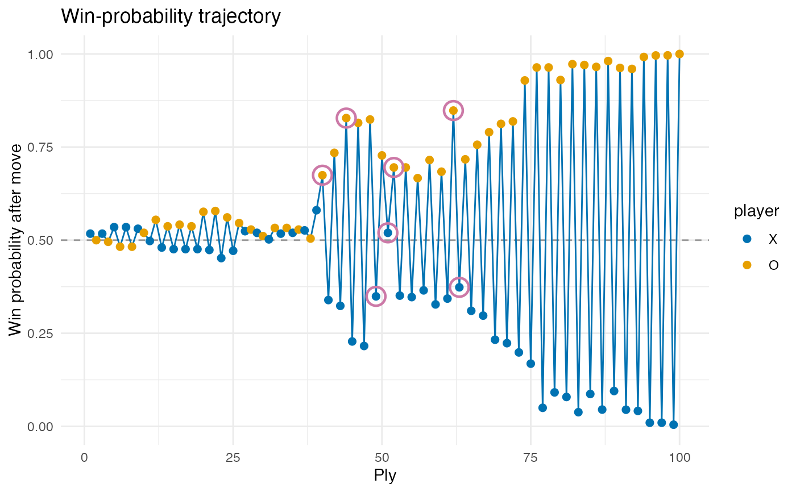

Plots win_prob_after (from tsr_analyze_game()) over plies, with a 0.5
reference and turning points marked. Returns a ggplot.
Arguments
- analysis
A tibble from
tsr_analyze_game().
Examples
# \donttest{
g <- tsr_play_game("random", "random", seed = 1L)
tsr_plot_winprob(tsr_analyze_game(g))

# }